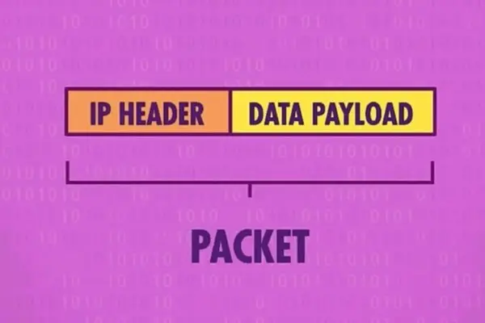
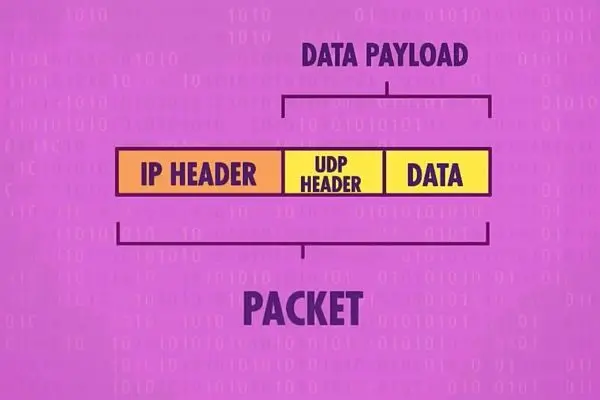

Lecture 1
- A Naive Network
- An Addressed Network
- Internet Protocol (IP)
- User Datagram Protocol (UDP)
- Transmission Control Protocol (TCP)
- The Internet Using TCP/IP
- HTTP and HTTPS
- Demo on Web Services Hosting
- Inspecting HTTP Logs in CLI
- Domain Name System (DNS)
- Providing a Web Page
A Naive Network
- Assume we have a network of computers fully connected to each other with bare data cables.
- When a computer sends a message, the signal is broadcasted to all other computers due to physical laws, and all computers receive the message.
- This is a naive network and is not practical.

An Addressed Network
- Assign an address to each computer.
- The sender embeds the address of the receiver in the message.
- When a computer receives a message:
- It checks the address of the receiver.
- If the address matches, the computer processes the message.
- Otherwise, it discards the message.

Internet Protocol (IP)
- Each computer on the Internet has a unique address called an IP address.
- When a computer sends a message:
- It embeds the IP address of the receiver in the message.
- When a computer receives a message:
- It checks the IP address of the receiver.
- If the address matches, the computer processes the message.
- Otherwise, it discards the message.
-
The structure of a packet of data under IP:
In detail if are interested:
0 1 2 3 0 1 2 3 4 5 6 7 8 9 0 1 2 3 4 5 6 7 8 9 0 1 2 3 4 5 6 7 8 9 0 1 +-+-+-+-+-+-+-+-+-+-+-+-+-+-+-+-+-+-+-+-+-+-+-+-+-+-+-+-+-+-+-+-+ |Version| IHL |Type of Service| Total Length | +-+-+-+-+-+-+-+-+-+-+-+-+-+-+-+-+-+-+-+-+-+-+-+-+-+-+-+-+-+-+-+-+ | Identification |Flags| Fragment Offset | +-+-+-+-+-+-+-+-+-+-+-+-+-+-+-+-+-+-+-+-+-+-+-+-+-+-+-+-+-+-+-+-+ | Time to Live | Protocol | Header Checksum | +-+-+-+-+-+-+-+-+-+-+-+-+-+-+-+-+-+-+-+-+-+-+-+-+-+-+-+-+-+-+-+-+ | Source Address | +-+-+-+-+-+-+-+-+-+-+-+-+-+-+-+-+-+-+-+-+-+-+-+-+-+-+-+-+-+-+-+-+ | Destination Address | +-+-+-+-+-+-+-+-+-+-+-+-+-+-+-+-+-+-+-+-+-+-+-+-+-+-+-+-+-+-+-+-+ | Options | Padding | +-+-+-+-+-+-+-+-+-+-+-+-+-+-+-+-+-+-+-+-+-+-+-+-+-+-+-+-+-+-+-+-+ | Data | +-+-+-+-+-+-+-+-+-+-+-+-+-+-+-+-+-+-+-+-+-+-+-+-+-+-+-+-+-+-+-+-+
User Datagram Protocol (UDP)
- UDP addresses the issue of multiple programs running on a single computer.
- Each program has a unique port number.
- When a computer sends a message:
- It embeds the port number of the receiver in the message.
- When a computer receives a message:
- It checks the port number of the receiver.
- If the port number matches, the computer processes the message.
- Otherwise, it discards the message.
-
The structure of a packet of data under UDP:
In detail if are interested:
0 1 2 3 0 1 2 3 4 5 6 7 8 9 0 1 2 3 4 5 6 7 8 9 0 1 2 3 4 5 6 7 8 9 0 1 +-+-+-+-+-+-+-+-+-+-+-+-+-+-+-+-+-+-+-+-+-+-+-+-+-+-+-+-+-+-+-+-+ | Source Port | Destination Port | +-+-+-+-+-+-+-+-+-+-+-+-+-+-+-+-+-+-+-+-+-+-+-+-+-+-+-+-+-+-+-+-+ | Length | Checksum | +-+-+-+-+-+-+-+-+-+-+-+-+-+-+-+-+-+-+-+-+-+-+-+-+-+-+-+-+-+-+-+-+ | Data | +-+-+-+-+-+-+-+-+-+-+-+-+-+-+-+-+-+-+-+-+-+-+-+-+-+-+-+-+-+-+-+-+
Transmission Control Protocol (TCP)
- TCP improves upon UDP by ensuring:
- Messages are delivered in order.
- Messages are delivered without error.
- Data chunks can arrive in different orders but are reassembled correctly.
-
The structure of a packet of data under TCP:

In detail if are interested:
0 1 2 3 0 1 2 3 4 5 6 7 8 9 0 1 2 3 4 5 6 7 8 9 0 1 2 3 4 5 6 7 8 9 0 1 +-+-+-+-+-+-+-+-+-+-+-+-+-+-+-+-+-+-+-+-+-+-+-+-+-+-+-+-+-+-+-+-+ | Source Port | Destination Port | +-+-+-+-+-+-+-+-+-+-+-+-+-+-+-+-+-+-+-+-+-+-+-+-+-+-+-+-+-+-+-+-+ | Sequence Number | +-+-+-+-+-+-+-+-+-+-+-+-+-+-+-+-+-+-+-+-+-+-+-+-+-+-+-+-+-+-+-+-+ | Acknowledgment Number | +-+-+-+-+-+-+-+-+-+-+-+-+-+-+-+-+-+-+-+-+-+-+-+-+-+-+-+-+-+-+-+-+ |Offset | Res. | Flags | Window | +-+-+-+-+-+-+-+-+-+-+-+-+-+-+-+-+-+-+-+-+-+-+-+-+-+-+-+-+-+-+-+-+ | Checksum | Urgent Pointer | +-+-+-+-+-+-+-+-+-+-+-+-+-+-+-+-+-+-+-+-+-+-+-+-+-+-+-+-+-+-+-+-+ | Options | Padding | +-+-+-+-+-+-+-+-+-+-+-+-+-+-+-+-+-+-+-+-+-+-+-+-+-+-+-+-+-+-+-+-+ | Data | +-+-+-+-+-+-+-+-+-+-+-+-+-+-+-+-+-+-+-+-+-+-+-+-+-+-+-+-+-+-+-+-+
The Internet Using TCP/IP
- The Internet is a giant network of computers connected to each other.
- The main protocol used is TCP/IP, a combination of TCP and IP.
- In theory:
- We can access any computer on the Internet if we know its IP address.
- We can access a specific program on the computer if we know its port number
HTTP and HTTPS
-
HTTP or hypertext transfer protocol is an application-level protocol that developers use to build powerful and useful things through the transfer of data from one place to another. HTTPS is a secure version of this protocol.
- Unlike the protocol mentioned previously (TCP/IP), HTTP is a higher-level protocol that is built on top of TCP/IP, it’s more like the protocol defines how the contents in the data chunks should be structured, instead of how packet contains the data should be structured.
+-+-+-+-+-+-+-+-+-+-+-+-+-+-+-+-+-+-+-+-+-+-+-+-+-+-+-+-+-+-+-+-+ | | | Headers (TCP/IP or UDP/IP Stuffs) | <--- Transmission Level | | +-+-+-+-+-+-+-+-+-+-+-+-+-+-+-+-+-+-+-+-+-+-+-+-+-+-+-+-+-+-+-+-+ | | | Data (Organized according to HTTP) | <--- Application Level | | +-+-+-+-+-+-+-+-+-+-+-+-+-+-+-+-+-+-+-+-+-+-+-+-+-+-+-+-+-+-+-+-+ -
When we see an address such as
http://10.20.229.83:8080we are actually implicitly visiting that address with a/at the end of it. -
The path is what exists after that slash. For example,
http://10.20.229.83:8080/folder/file.htmlvisits the software with port8080, which is on the machine with ip address10.20.229.83and browses to thefolderdirectory, and then visits the file namedfile.html. -
httpin this address is the protocol that is used to connect to that web address. By protocol, we mean that HTTP utilizesGETorPOSTrequests to ask for information from a server. When we open firefox’sdeveloper toolsand visitNetwork, selecting any item, we will seeHeaders. we’ll see mentions ofGET. This is possible in other browsers as well, using slightly different methods. - For example, when issuing a GET request, our computer may send the following data to a server:
GET / HTTP/1 Host: 10.20.229.83:8080Notice that this requests via HTTP the content served on www.harvard.edu.
- Generally, after making a request to a server, we will receive the following data in
Response Headers:HTTP/1 200 OK Content-type: text/html; charset=utf-8
Demo on Web Services Hosting
-
To demonstrate the how we actually access another computer through the Network using TCP/IP, let’s set up a simple web service on a remote machine and access it from our local machine.
- First, let’s connect to the machine with the corresponding IP address using SSH to get a terminal on the remote machine.
ssh username@ip-addressIn the lecture demo, the specific command is
ssh zivmax@10.20.229.83 - Then, let’s create a temporary directory and navigate to it.
mkdir server cd server - Next, let’s create a simple web server using Python.
python3 -m http.server 8080 --bind 0.0.0.0This command will start a simple http server on port
8080, and--bind 0.0.0.0allows machines with any IP address to access the server. - Now, let’s access the server from our local machine. Open a web browser and type in
http://<ip-address>:8080in the URL bar.In the lecture demo, the specific address is
http://10.20.229.83:8080. -
We can see the content of the
serverfolder on the remote machine is displayed in the web browser on our local machine, but it’s empty now. - Let’s add a file to the
serverfolder:echo "Hello, World!" > hello.txtand refresh the web page on our local machine. We can see the
Hello, World!is displayed in the web browser. - In the very early days of the Internet, users just accessed plain text files like this. But as more and more people read on the Internet, some people think it’s time to bring some more interesting things to the users. .
Inspecting HTTP Logs in CLI
- We can analyze the work of HTTP protocols at terminal. For example, type the following in our terminal window:
curl -I http://10.20.229.83:8080Notice that the output of this command returns all the header values of the responses of the server.
- Further, execute the following command in our terminal window:
curl -I http://10.20.229.83:8080/non-existNotice that we will see a
404response, telling us that the requested URL does not exist. - There are numerous other response codes, such as:
200 OK 301 Moved Permanently 302 Found 304 Not Modified 304 Temporary Redirect 401 Unauthorized 403 Forbidden 404 Not Found 418 I'm a Teapot 500 Internal Server Error 503 Service Unavailable - It’s worth mentioning that
500errors are always server-side errors, while400errors are client-side errors.
Domain Name System (DNS)
-
It would be very tedious if we needed to remember an IP address to visit a website, just like we have to remember a phone number to call someone. This is where DNS comes in.
-
DNS, or domain name systems, is a collection of servers on the internet that are used to query the website’s IP addresses like
shanghaitech.edu.cn. Just like the phone book to look up a phone number, DNS is the phone book of the internet. -
So each time when we visit a website, our computer will first ask the DNS server for the IP address of the website, and then use the IP address to visit the website.

- If we use
pingcommand in the terminal, we can see the IP address of the website we are visiting:ping www.shanghaitech.edu.cnThis command will show the actual IP address of the website
www.shanghaitech.edu.cn. - For our demo server, we can use a local DNS-like feature to map the IP address to a domain name, which is the local hosts file. Let’s add the following line to the
hostsfile on our local machine:ip-address remote-serverwhere
ip-addressis the IP address of the remote machine.In the lecture demo, the specific line is
10.20.229.83 server. - Now, we can access the server using the domain name
http://server:8080in the URL bar of the web browser, instead of the IP address.
Providing a Web Page
- Let’s go back to the remote machine, and add some interesting content to the
serverfolder in a new filefile.txt:<!DOCTYPE html> <html lang="en"> <head> <title>css</title> </head> <body> <p style="font-size: large; text-align: center;"> Interactive Web Engineering Basics </p> <p style="font-size: medium; text-align: center;"> Welcome to home page! </p> <p style="font-size: small; text-align: center;"> Copyright © Lin-Zheng Tang </p> </body> </html> -
Refresh the web page on our local machine, we can see the content of
file.txtis displayed in the web browser. - But notice that the content is displayed without the promised “interesting content”. To fix this, let’s copy the file, but with a different extension name:
cp file.txt file.htmland refresh the web page on our local machine. We can see the content of
file.htmlis displayed in the web browser is not plain text anymore. -
What our browser just did, is not only download the file from the remote machine, but also interpret (render) the content of the file, displaying a much more human-readable and fancy content to the user. And this is the start point of the web technologies.
- We’ll dive deeper into the web technologies in the next lecture.